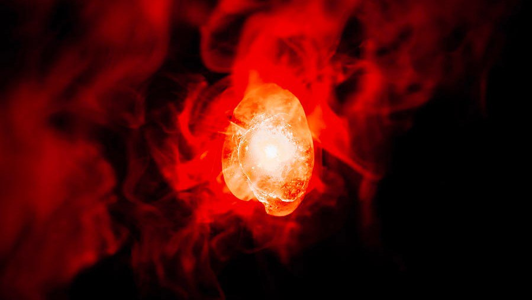

2.
Gemma della Realtà
La gemma della realtà, di colore rosso, permette al possessore di realizzare qualsiasi desiderio, anche se questo è in contraddizione con le leggi scientifiche.
Le sue potenzialità sono direttamente proporzionali alla capacità del possessore di controllarla. È stata definita occasionalmente come la più potente delle Gemme, soprattutto se usata senza le altre cinque che bilanciano il suo potere
alterante in modo che non vada fuori controllo.
Possessori: Thanos, Il Collezionista, Professor X, Iron Man, Jane Foster, Nebula
